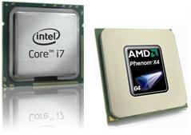

AMD или INTEL ?

Согласитесь, многие из вас при покупке компьютера задавались вопросом, на базе какого процессора он должен быть. С 1978 до 1994 года процессоры выпускались
в основном корпорацией Intel и назывались просто: 8086, 8088, 286, 386, 486. Но все эти цифровые варианты в далеком прошлом. Используемые в современных
компьютерах процессоры выпускаются трем корпорациями: Intel, AMD и VIA (последние применяются очень редко). В этой статье мы рассмотрим преимущества каждой
из корпорации, после чего вы будете точно уверены, какой процессор вам нужен при покупке системного блока.
1.Офисный компьютер:
1. Платформа с процессором Intel
Если выбор сделан в пользу процессора Intel, то естественно выбор падает на процессор Celeron . Почему - Celeron? Во-первых, цена. Хотя в настоящее время
цена на все это поколение процессоров существенно упала, соотношение Celeron/Pentium по цене осталось прежним.
Во-вторых, по производительности Celeron с частотой 2000 МГц не уступает, а иногда даже превосходит Celeron с частотой 2400 МГц.
Результат парадоксальный! Однако Celeron-2400 - это урезанный Pentium 4, с кешем L2, меньшим, чем у Celeron-2000.
Что касается материнской платы, рекомендуется применять материнские платы, основанные на чипсетах Intel. Один производитель процессора и чипсета - гарантия
эффективной и стабильной работы.
1.2. Платформа с процессором AMD
Для недорогих настольных компьютеров в Гродно, которые предполагается использовать для офисной работы, вполне подойдет процессор AMD Athlon, если надо
купить компьютер в Гродно, с небольшим параметром
P-reting. В данном случае можно рассматривать процессоры AMD Athlon XP или Sempron с рейтингом от 5000+.
Сразу же напомним, что следует воздержаться от применения процессоров Athlon и Sempron с частотой ниже 2600 МГц, так как они не поддерживают инструкции SSE.
Семейства Duron вообще в настоящее время больше нет, точнее модели с частотам 1600 и 1800 уже полностью устарели в связи с появлением младших Sempron.
Кроме того, процессоры Athlon выпускаются в двух модификациях: Soket AM2и Socket AM3 . Первый вариант затрудняет вариант модернизации, так как был быстро
снят с производства. Второй же вариант допускает использование практически всей линейки процессоров AMD.
Итак, какой же оптимальный вариант? Intel или AMD?
Все-таки корпорация Intel предоставляет для сборки офисного компьютера и дальнейшей модернизации больше возможностей.
2.Домашний компьютер.
2.1. Платформа с процессором Intel
Начальной точкой отсчета для этой категории будем считать процессор Pentium E с тактовой частотой 2,4 ГГц и выше. Если нужна высокая производительность,
нужно выбирать модели с частотой шины от 1066 МГц и выше. Благодаря двухканальному включению памяти DDR SDRAM и быстродействию самого чипсета,
производительность компьютера будет максимальной. Кроме того, это позволит в дальнейшем произвести модернизацию. Обратите внимание на Pentium E с тактовой
частотой 3,0 ГГц. Достоинство этой модели - поддержка набора команд SSE3, так как уже много приложений используют эти инструкции. По-прежнему процессоры
семейства Pentium отлично решают задачи потокового кодирования видео из-за высокой тактовой частоты и оптимизированности большого того же рода приложений
разработанных под процессоры Intel.
С учетом этого достоинства вариантом для покупки может стать процессор Celeron . Он показывает достаточно высокую производительность. Модель с частотой
2800 МГц в большинстве игровых и расчетных приложений показала хорошие результаты, сравнимые даже с, хотя и дороже последнего по стоимости на двадцать
процентов. Celeron на 5-10% уступает процессорам Athlon/Sempron с таким же рейтингом в игровых приложениях и идет почти вровень, выполняя задачи на
потоковое кодирование.
Иными словами, Celeron - это не урезанный вариант Pentium , а процессор, который за меньшие деньги дает достаточно высокий уровень производительности.
2.2. Платформа с процессором AMD
Платформа, основанная на процессорах AMD, подойдет тем, кто желает приобрести производительный компьютер сейчас, и через несколько лет полностью менять
материнскую плату, процессор, видеокарту, память и снова получить производительную систему. Так же, современные процессоры AMD все еще дешевле аналогов
от Intel. Преимуществом этих кристаллов является меньшее энергопотребление, встроенный контроллер памяти, и благодаря технологии CoolnQuit можно понизить
частоту процессора, без выгрузки операционной системы.
3.Компьютер для игр.
3.1. Платформа с процессором Intel
Если вам нужен многоцелевой компьютер, на котором можно поиграть и поработать в интернете, и посмотреть, записать фотографии, послушать музыку, посмотреть
фильм, то Pentium E 6800 - очень хороший вариант по соотношению цена/качество. Если вы намереваетесь работать с базами данных (например 1С:Бухгалтерия) или
иной важной информацией, то тут подойдет наиболее производительный компьютер на базе Intel Core 2 Duo и Intel Core 2 Quad. Эти процессоры незаменимы в
современных играх. Для игрового компьютера идеальный вариант - Intel Core i5, либо Intel Core i7 с 4 Гб оперативной памяти.
3.2. Платформа с процессором AMD
Для компьютеров этого уровня подойдет процессор AMD Phenom 2 и разные модификации X2, X3, X4. Поскольку главным достоинством этих процессоров является
большой кэш для обработки данных. В обработке видео, 3D-анимации и т.д. применение этих типов процессоров может обеспечить очень высокую производительность.
Напомним также о модели AMD Phenom 2 X6, которая является шестиядерной версией AMD Phenom.
Читайте также:
Разблокирование процессоров AMD.
Оптические процессоры - замена традиционной микроэлектронике.
Следующая статья:
Как правильно выбрать компьютер для офиса.